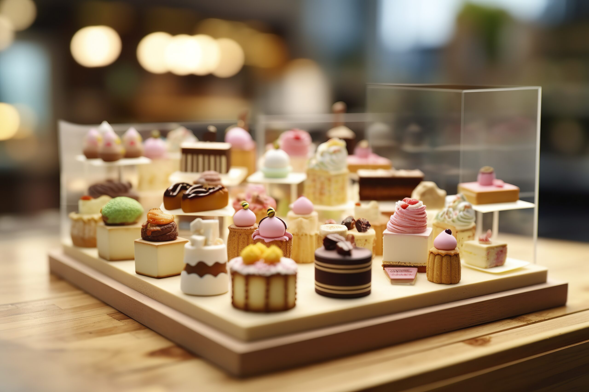

Dulce Placer
Hola, soy una joven de 18 años con una gran pasión por la repostería. Durante los
últimos tres años, me he dedicado a estudiar gastronomía, lo que me ha permitido descubrir mi verdadera
vocación: el mundo de los dulces. A lo largo de este tiempo, he investigado diversas técnicas y estilos de
repostería para confirmar que esta es mi verdadera pasión.
Este proceso de aprendizaje y crecimiento académico no solo ha fortalecido mi amor por la repostería,
sino que también me ha proporcionado las habilidades necesarias para ser más organizada y eficiente en mi
trabajo.
Dulce Placer, mi propio proyecto en el mundo de la
repostería.